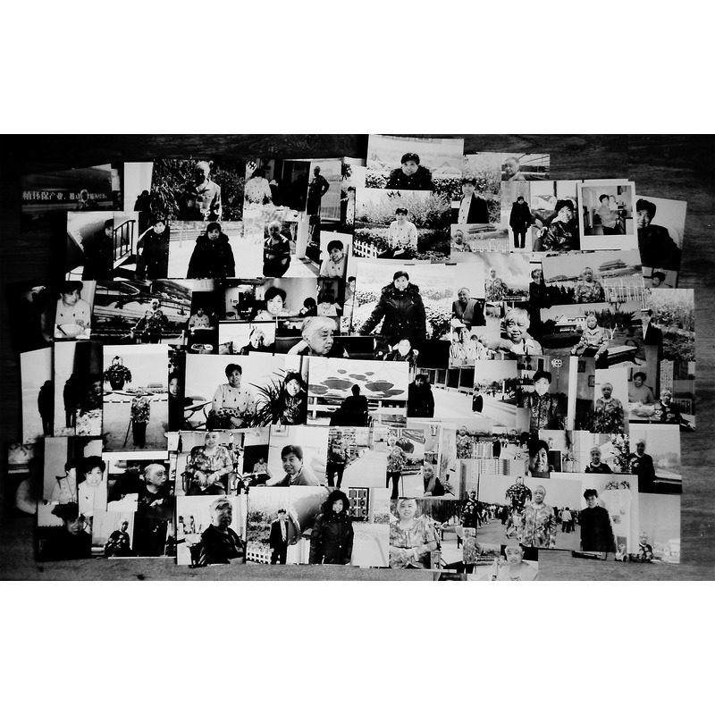

1 of 6

2 of 6
3 of 6
_Jiachengzhu,_23_,2017_.jpg)
4 of 6
5 of 6
6 of 6
The main theme of my work is existence, memory and family. My grandmother passed away on August 23rd. After that, I began to think about death and memory. While developing my project, I realised that photography itself bears philosophical implications for those subjects: it stops the moment (death), enables its recollection (memory) and proves someone's existence. This project conveys my emotions for her, seeking to prove she existed in the world.